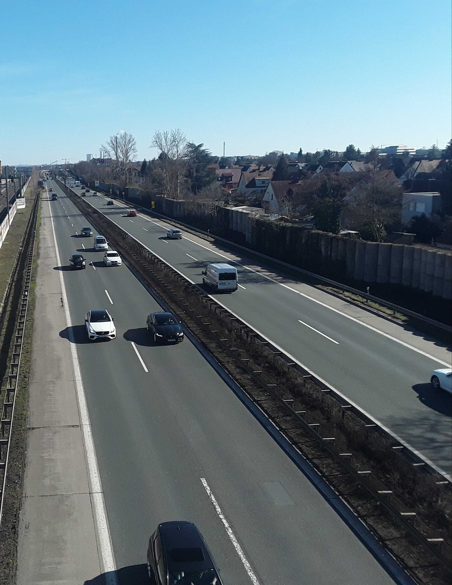

"Schnellstraße wird zur Autobahn", Blick Richtung Fürth zwischen Jansenbrücke und Leiblsteg (Nürnberger Nachrichten, Juli 1968)

1959 begannen die ersten Baumaßnahmen

Eröffnung Teilstück zwischen Kurgartenstraße und Jansenbrücke, Blick Richtung Fürth (Nürnberger Nachrichten, 1967)

1968 begann autobahnähnliche Ausbau, rechts im Hintergrund das Plärrerhochhaus. (Bild: Nürnberger Nachrichten, 2015)

Luftbildaufnahmen vom Gelände des Nürnberger Hafen. Zur Orientierung ist die Schule in der Knauerstraße rot markiert

Baustelle Frankenschnellweg ca. 1960, Blick nach Westen, in der Mitte die Ringbahnbrücke (Quelle: unbekannt)

Stau auf dem Frankenschnellweg heute (br.de, 05.03.2020)

Frankenschnellweg auf Höhe des Leiblstegs (2021)

Bade-Schwimmveranstaltung im Kanalhafen Fürth bei Poppenreuth (vmtl. 1900)

Bootspartie im Kanalhafen bei Poppenreuth (vmtl. um 1910)

Der ausgetrocknete Hafen am Ludwigskanal bei Poppenreuth

Der Hafen am Ludwigskanal bei Poppenreuth

Die ausgetrockenete Schleuse an der Sandreuthstraße bei den Rampen, links Kessel für Stadtgas. (Quelle: Hans Grüner)

Die Holzhandlung P. Nigl am Hafen an der Rothenburger Straße. Im Hintergrund die Hessestraße (links) und die Christuskirche (Mitte). (Bild: Härtlein, 1930)

Der Nürnberger Hafen ca. 1920er Jahre, links die Bahnstrecke nach Fürth und dahinter die Häuserzeile in der Hessestraße (Quelle: Hans Grüner)

Die ehemalige Schleuse 77 zwischen den Bahnstrecken an den Rampen (Bild: Kimmig, Strassenbaumamt Nürnberg, um 1950)

Aus dem Brockhaus' Konversations-Lexikon (1895)

Nürnberger Hafen ca. 1920, Blick von der Schleuse nach Westen. Die Häuser in der Rothenburger Straße stehen heute noch

Schleuse 81 - Anlegestelle des 'Schlagrahmdampfers', Farbdia von 1935 (Quelle: Hans Grüner)

Idylle mit Pferd


{kind=link}